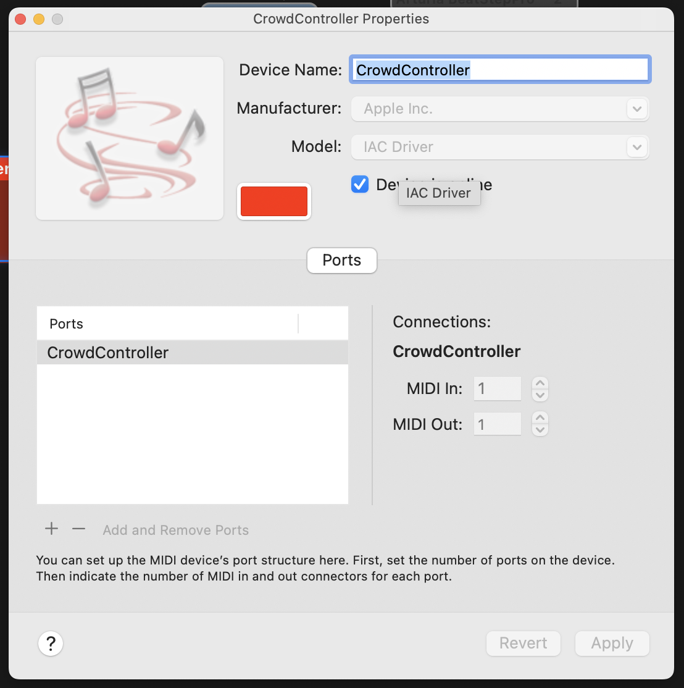

Installation¶
Create a virtual midi device¶
MacOS¶
To create a virtual midi device on MacOS you can use the IAC Driver. To enable it, open the Audio MIDI Setup application and click on Window -> Show MIDI Studio. Then double-click on the IAC Driver.
- check the
Device is onlinecheckbox. - name the device
Crowd Controller. - click on the
+button to add a new port and name itCrowd Controller.
|  |
|---|
| MacOS MIDI setup |
Windows¶
To create a virtual midi device on Windows you can use the loopMIDI application. Download and install the application from Tobias Erichsen. Open the application and click on the + button to add a new port and name it Crowd Controller.
Windows
The loopMIDI application was not tested.
Python client¶
To use the python library you need to install some libraries, preferably in a virtual environment. cd into the crowd-controller/python-client directory:
and run the following commands:
Then you can run the client with:
Testing the midi device
You can test the midi-device in your DAW by running:
from the python-client directory. Some VCV Rack patches are included in the vcv directory to test the midi device but you can use any DAW.
ESP32C3¶
To program the ESP32C3 you need to install the Arduino IDE and the ESP32 board support. Follow the instructions on the Espressif website to install the boards.
Libraries¶
The following libraries are used in the ESP32 code: